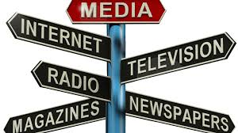
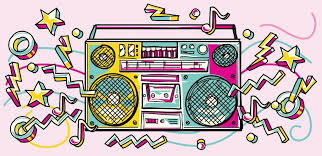
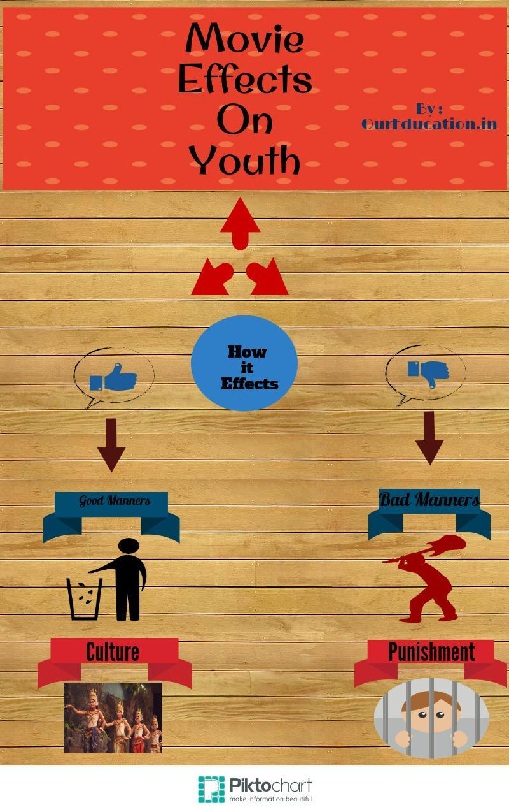
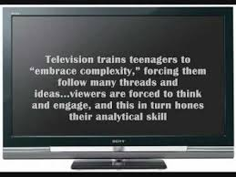
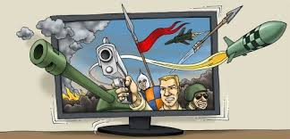
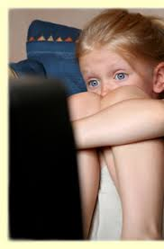
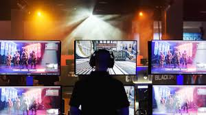
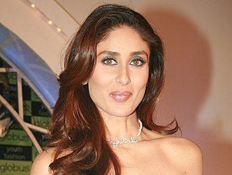
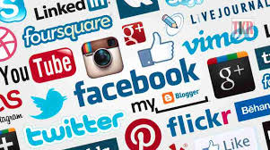

HAVEN'T YOU QUESTIONED YOURSELF THAT WHY POP CULTURE IS THE SOARING SWAY
ON YOUTHS? Ahh! don't worry, here is your answer ;)
THE SOURCES OF POP CULTURE ARE:

- Films
- Television Programms
- Popular Musics
- Sports
- Corporations
- Books
- Video Games
- The Internet
Aren't they intresting? Ummm... your answer must be a 'yes'? Let's see
what's next!
PRINT CULTURE:
With the invention of the printing press in the sixteenth century, mass
produced, cheap books became widely available to the public. With this,
the transmission of common knowledge and ideas was possible. Print culture
is the conglomeration of effects on human society that is created by
making printed forms of communication. Print culture encompasses many
stages as it has evolved in response to technological advances.Print
culture embodies all forms of printed text and other printed forms of
visual communication.
One prominent scholar in the field is Elizabeth Eisenstein, who contrasted
print culture, which appeared in Europe in the centuries after the advent
of the Western printing-press (and much earlier in China where woodblock
printing was used from 594 AD), to scribal culture. Walter Ong, by
contrast, has contrasted written culture, including scribal, to oral
culture. Ong is generally considered one of the first scholars to define
print culture in contrast to oral culture. These views are related as the
printing press brought a vast rise in literacy, so that one of its effects
was simply the great expansion of written culture at the expense of oral
culture. The development of printing, like the development of writing
itself, had profound effects on human societies and knowledge.
"Print culture" refers to the cultural products of the printing
transformation.
In terms of image-based communication, a similar transformation came in
Europe from the fifteenth century on with the introduction of the old
master print and, slightly later, popular prints, both of which were
actually much quicker in reaching the mass of the population than printed
text.
know
more
RADIO CULTURE:
In the 1890s, Nikola Tesla and Guglielmo Marconi created the
radiotelegraph, allowing for the modern radio to be born.
 This lead to the
radio being able to influence a more "listened-to" culture, with
individuals being able to feel like they have a more direct impact.
This radio culture is vital, because it was imperative to advertising, and
it introduced the commercial.
Radio is originally a form of wireless telecommunication in which a radio channel messages spread in the form of radio
waves . The signal was received by a radio device.Nowadays, each channel through which unfinished transmittance is
broadcast as radio, regardless of the technique.
know more
FILMS:
Now-a-days almost every youth is fond of Films, isn't? So, let's headover to why films are the real source of attraction and how does it influence youths.
Films and cinema are highly influential to popular culture, as films as an art form are what people seem to respond to
the most. With moving pictures being first captured by Eadweard Muybridge in 1877, films have evolved into elements
that can be cast into different digital formats, spreading to different cultures. Films started massive popular culture.
Movie influence youth negatively and positively. This is because; teenagers will imitate their favourite actor
and actress to follow exactly their styles such as, dressing styles, hair style, character of the actor or actress act
in the movie, language and so on. Movies affect teenagers in their attitude.
Influence of Cinema on Youths today:
Movie is well-known among teenagers. Movie affects teenagers in different kind of ways. One of the reasons for the
popularity of the movie is that it entertains all types or people, young and old, literate and illiterate. Most of the
teenagers watching movies are for relaxations. Sometimes, they feel stress, so that teenagers spending their time in
watching movies in cinema. First, movie influence youth negatively and positively. This is because; teenagers will
imitate their favourite actor and actress to follow exactly their styles such as, dressing styles, hair style, character
of the actor or actress act in the movie, language and so on. Movies affect teenagers in their attitude. Teenagers watch
too much movies and its influence their attitude change. They might admire the character, their thoughts, or idea's.
They decide to do the same as them.
Does movie contain any moral? For this question, most of the people answer is "neutral". This is because; some of the
movie contains moral value, but some movie does not contain moral value. Most of the movie is about love stories. Love
stories make the teenagers mind change and they will follow exactly what the actor or actress act in the movie. Watching
movie in cinema affect interacting with family? Most of the people strongly agree for this question. This is because, if
teenagers addicted to watching movie in theater, they will forget to back home. Most of time, they will be at Cinema, so
that it will affect the beautiful relationship between parents and children. It also will affect teenagers to influence
in bad habits.
Finally, watching movies is simply for the pleasure. Teenagers can watch movie but do not follow or imitate exactly what
happen in the movie.
Again, what's your favorite movie? I can even judge you by that! haha, just kidding ;)
Be smart in watching movies, take the good things and throw away bad things.
know more
TELEVISION PROGRAMMS

One of the major problem which youth of nowadays are facing are exposure to television viewing which is wasting a lot of
their time needed to do some other thing such as reading and development of their social behaviour and cultural
integrity.
Television can be a powerful teacher . Watching Sesame Street is an example of how toddlers can learn valuable
lessons about racial harmony, cooperation, kindness, simple arithmetic and the alphabet through an educational
television format. Some public television programs stimulate visits to the zoo, libraries, bookstores, museums and other
active recreational settings, and educational videos can certainly serve as powerful prosocial teaching devices. The
educational value of Sesame Street, has been shown to improve the reading and learning skills of its viewers. In
some disadvantaged settings, healthy television habits may actually be a beneficial teaching tool .
Still, watching television takes time away from reading and schoolwork. More recent and well-controlled studies show
that even 1 h to 2 h of daily unsupervised television viewing by school-aged children has a significant deleterious
effect on academic performance, especially reading

The objectives of this paper are to examine the impact of television viewing in adolescents using software
visualization pattern. This paper is developed based on data source collected from questionnaires and Statistical
Package for Social Sciences was used to analyze the questionnaire.

The results were presented in a 2-Dimensional
graphical representation using software visualization approach. It is observed that excessive use of electronic media
(majorly the Television) among youth is resulting in conventional diminishing in the cultural and traditional virtues of
the developing years of innocence grooming.
The debacle of television as medium for social change is still an emerging, moving target for researchers across the
globe; although there is rich oeuvre of both nugget and maverick research works available in this arena. The success
tales of television as a medium for social change has negated the confabulations that television is basically an
entertainment platform that is hostile to thoughts. Devadas & Ravi, (2013) also opined that television is an adaptive
medium and can follow different approaches when efficaciously and judiciously used and will definitely contribute
sustained nay-exacerbated development. Present study undertaken makes an effort to trace social impact of television on
youth empirically in the Nigerian States.
know more
MUSIC:
Popular music is music with wide appeal that is typically distributed to large audiences through the music
industry. These forms and styles can be enjoyed and performed by people with little or no musical training.
It
stands in contrast to both art music and traditional or "folk" music. Art music was historically disseminated
through the performances of written music, although since the beginning of the recording industry, it is also
disseminated through recordings. Traditional music forms such as early blues songs or hymns were passed along orally, or
to smaller, local audiences.
In the 2000s, with songs and pieces available as digital sound files, it has become easier for music to spread from one
country or region to another.
Some popular music forms have become global, while others have a wide appeal within the
culture of their origin.  Through the mixture of musical genres, new popular music forms are created to reflect the
ideals of a global culture. The examples of Africa, Indonesia, and the Middle East show how Western pop music styles
can blend with local musical traditions to create new hybrid styles
The original application of the term is to music of the 1880s Tin Pan Alley period in the United States. Although
popular music sometimes is known as "pop music", the two terms are not interchangeable.Popular music is a generic
term for a wide variety of genres of music that appeal to the tastes of a large segment of the population, whereas
pop music usually refers to a specific musical genre within popular music. Popular music songs and pieces typically
have easily singable melodies. The song structure of popular music commonly involves repetition of sections, with the
verse and chorus or refrain repeating throughout the song and the bridge providing a contrasting and transitional
section within a piece
know more
SPORTS:
Sports include all forms of competitive physical activity or games which,through casual or organised participation,
aim to use, maintain or improve physical ability and skills while providing enjoyment to participants, and in some
cases, entertainment for spectators.

Key principles of sport include that the result should not be predetermined, and that both sides should have equal
opportunity to win. Rules are in place to ensure fair play, but participants can break these rules in order to gain
advantage.
Participants may cheat in order to unfairly increase their chance of winning, or in order to achieve other advantages
such as financial gains. The widespread existence of gambling on the results of sports fixtures creates a motivation for
match fixing, where a participant or participants deliberately work to ensure a given outcome rather than simply playing
to win.
Sportsmanship is an attitude that strives for fair play, courtesy toward teammates and opponents, ethical behaviour and
integrity, and grace in victory or defeat.
Sportsmanship expresses an aspiration or ethos that the activity will be enjoyed for its own sake. The well-known
sentiment by sports journalist Grantland Rice, that it's "not that you won or lost but how you played the game", and the
modern Olympic creed expressed by its founder Pierre de Coubertin: "The most important thing... is not winning but
taking part" are typical expressions of this sentiment.
Youth sport presents children with opportunities for fun, socialisation, forming peer relationships, physical fitness,
and athletic scholarships. Activists for education and the war on drugs encourage youth sport as a means to increase
educational participation and to fight the illegal drug trade. According to the Center for Injury Research and Policy at
Nationwide Children's Hospital, the biggest risk for youth sport is death or serious injury including concussion. These
risks come from running, basketball, association football, volleyball, gridiron, gymnastics, and ice hockey. Youth
sport in the US is a $15 billion industry including equipment up to private coaching.
CORPORATE BRANDING:
Corporate branding refers to the practice of promoting the brand name of a corporate entity, as opposed to specific
products or services. The activities and thinking that go into corporate branding are different from product and service
branding because the scope of a corporate brand is typically much broader. Although corporate branding is a distinct
activity from product or service branding, these different forms of branding can, and often do, take place side-by-side
within a given corporation. The ways in which corporate brands and other brands interact is known as the corporate brand
architecture
know more
PERSONAL BRANDING:

This image showcases Kareena Kapoor a new brand ambassador for Globus. Individuals brand themselves in order to
gain
popularity, jobs, and opportunities.
Personal branding includes the use of social media to promotion to brands and topics to further good repute among
professionals in a given field, produce an iconic relationship between a professional, a brand and its audience that
extends networks past the conventional lines established by the mainstream and to enhance personal visibility. Popular
culture: (also called mass culture and pop culture) is generally recognized by members of a society as a set of the
practices, beliefs, and objects that are dominant or prevalent in a society at a given point in time. As celebrities
online identities are extremely important in order to create a brand to line-up sponsorships, jobs, and opportunities.
As influencers, micro-celebrities, and users constantly need to find new ways to be unique or stay updated with trends,
in order to maintain followers, views, and likes.For example, Ellen DeGeneres has created her own personal branding
through her talk show The Ellen DeGeneres Show. As she developed her brand we can see the branches she created to extend
her fan base such as Ellen clothing, socks, pet beds, and more.
The relationship between brands and consumers is dynamic and must be constantly refined. This continuous process
demonstrates the ambivalence of consumerism. A personal brand may make itself appealing to companies in order to
reinforce its visibility and increase its chance of receiving a sponsorship.
Personal brands may be deliberately modified to reinvent a public persona. This may be to recover from a public
embarrassment, or to re-emerge from obscurity. The public perception of authenticity often determines the success of a
rebranding.
know more
SOCIAL MEDIA:
Social media can be "roughly defined as 'a group of Internet-based applications that build on the ideological and
technological foundations of Web 2.0 and that allow the creation and exchange of user-generated content'". Social
media extends beyond just Facebook and Twitter and into the professional world as well. There are general professional
profiles like LinkedIn and company or industry-specific networks, such as Slack.
Because of these professional networks,
self-branding is useful in finding a job or improving one's professional standing. As an online open source, social
media has become a place that is fulfilled with highly reliable and resourceful information to target user
identities.
Building a brand and an online presence through internal corporate networks allows for individuals to network with their
colleagues, not only socially but professionally as well. This kind of interaction allows for employees to build up
their personal brand relative to other employees, as well as spur innovation within the company because more people can
learn from more people.
Some social media sites, like Twitter, can have a flattened, all-encompassing audience that can be composed of
professional and personal contacts, which then can be seen as a more "'professional' environment with potential
professional costs". Because of its explicitly public nature, Twitter becomes a double-sided platform that can be
utilized in different ways depending on the amount of censorship a user decides on.
Personal branding focuses on "self-packaging," where "success is not determined by individuals' internal sets of skills,
motivations, and interests but, rather, by how effectively they are…branded"; it is more about self-promotion rather
than true self-expression. The difference between the two is that self-promotion is deliberately intentional in all
aspects because the individual is purposely shaping their image or persona, while self-expression can even be a
byproduct of promotion.

Aside from professional aspirations, personal branding can also be used on personal-level social networks to flare
popularity. The online self is used as a marketing and promotional tool to brand an individual as a type of person;
success on the virtual platforms then becomes "online social value [that could transform] to real rewards in the offline
world." When one is branding themselves on social media they need to consider these three things: "crafting their
physical footprint, creating their digital footprint, and communicating their message." A prominent example of a
self-made self-branded social media icon is Tila Tequila, who rose to prominence in 2006 on the Myspace network, gaining
more than 1.5 million friends, through expertly marketing her personal brand.
As social media has become a vehicle for self-branding, these moguls have begun to situate the maintenance of their
online brand as a job, which brings about new ways to think about work and labor, The logic of online sites and the
presence of feedback means that one's online presence is viewed by others using the same rubric to judge brands:
evaluation, ranking, and judgment. Thus, social media network sites serve as complex, technologically mediated venues
for the branding of the self.
know more
GO TO:
YOUR VIEWS WOULD BE APPRECIATED!!
Copyright ©2020 by Shristi Mohapatra